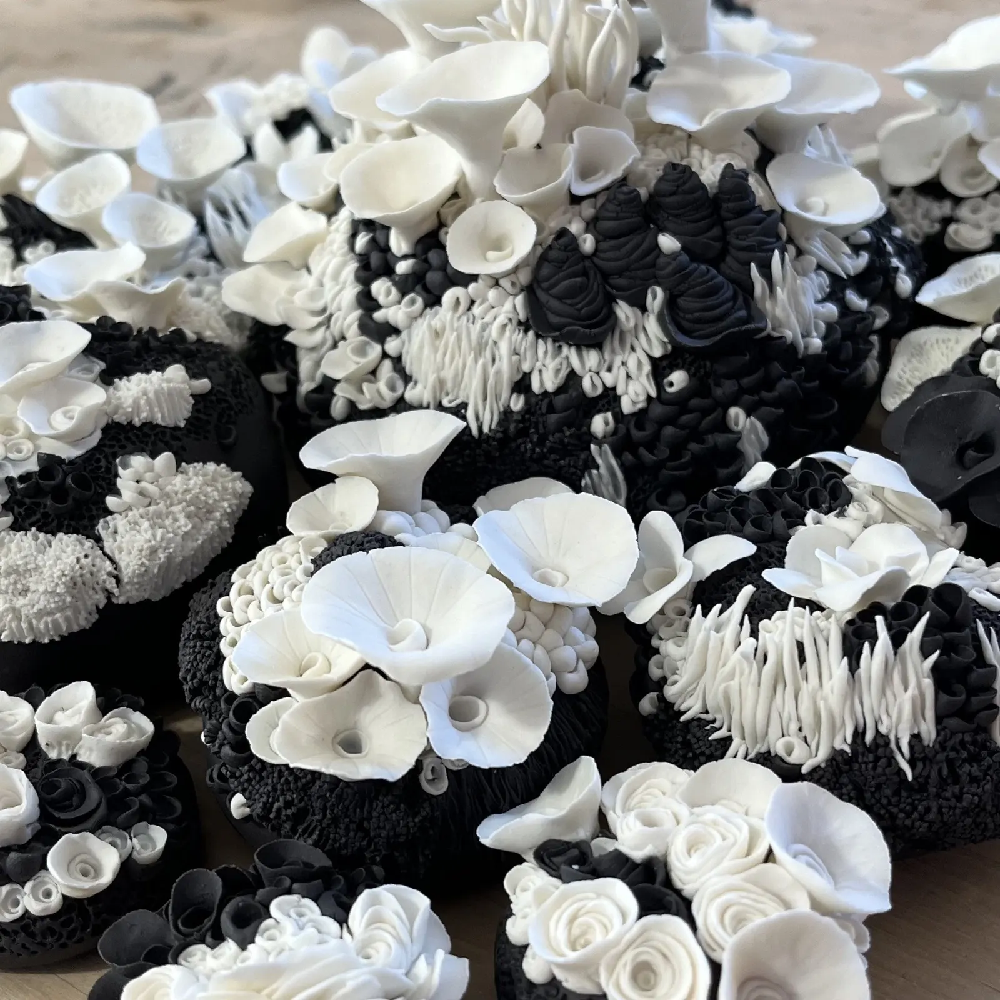
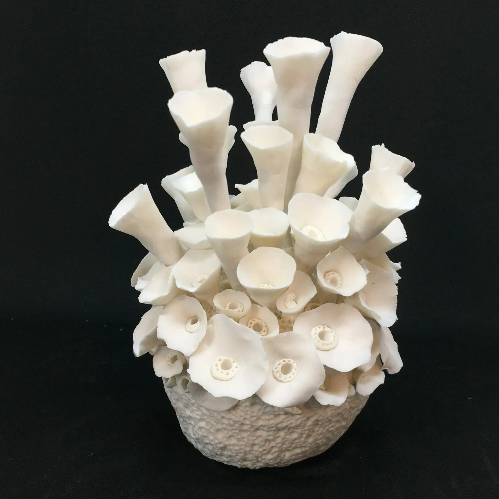
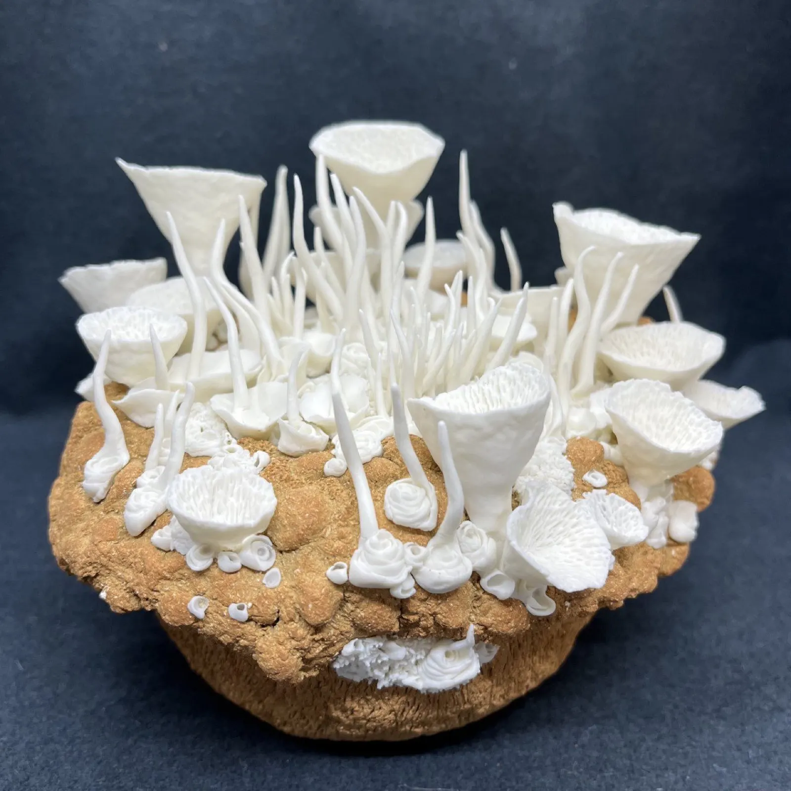
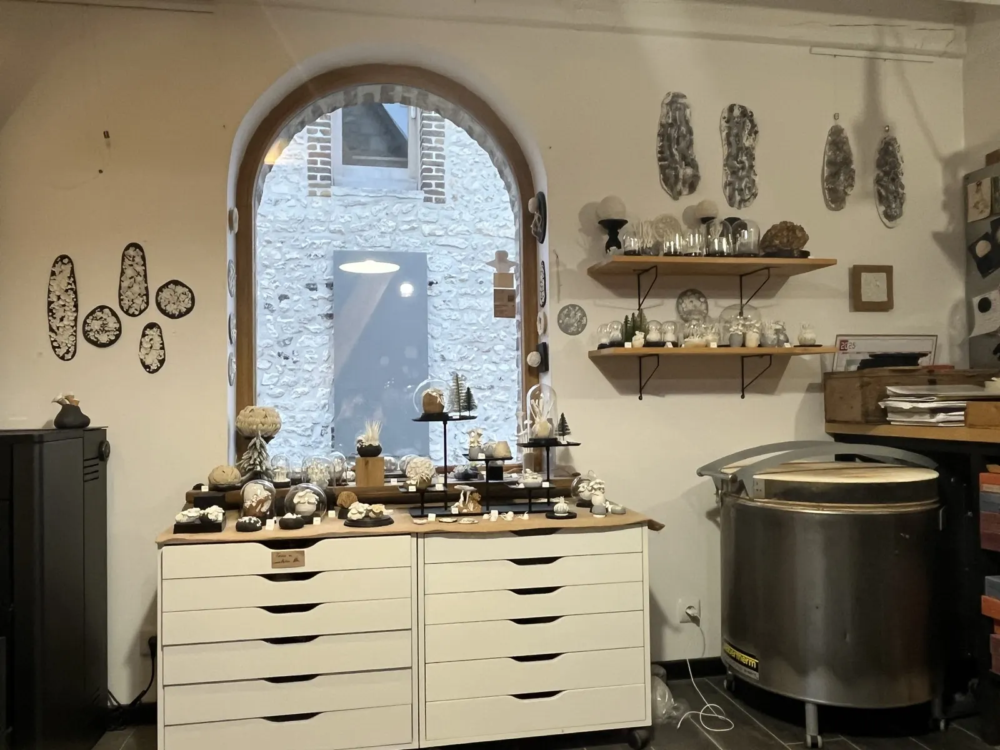
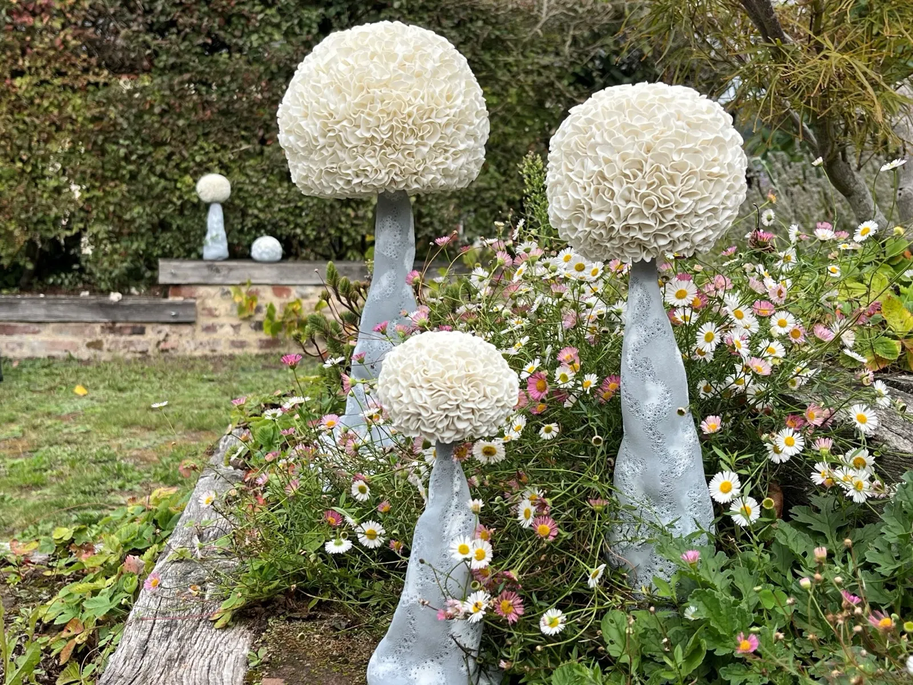
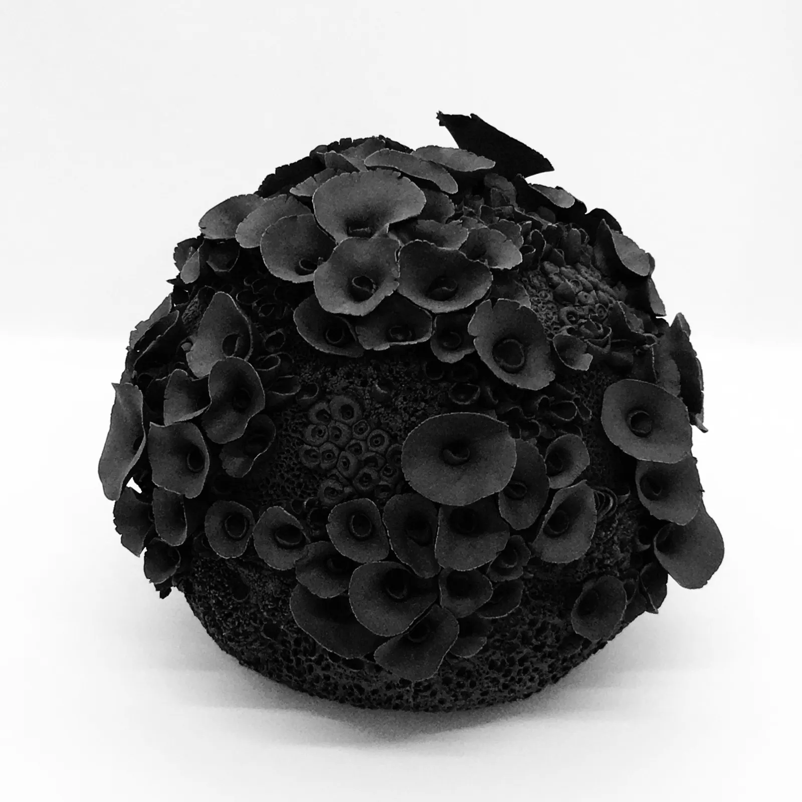
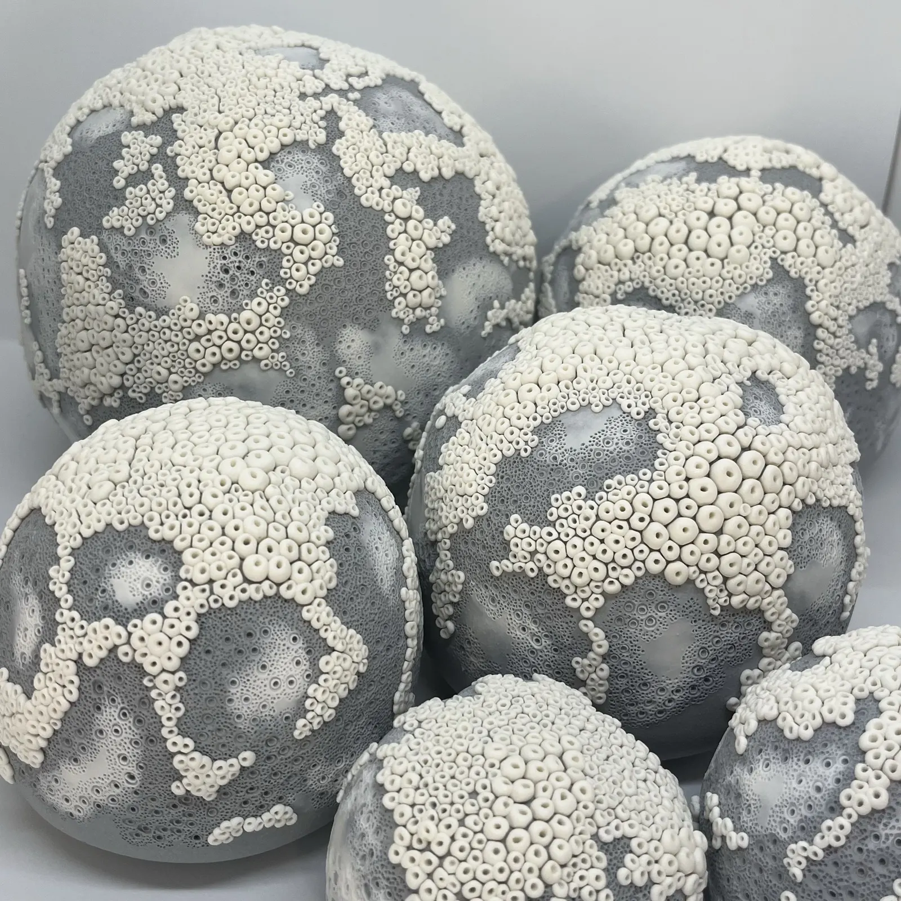
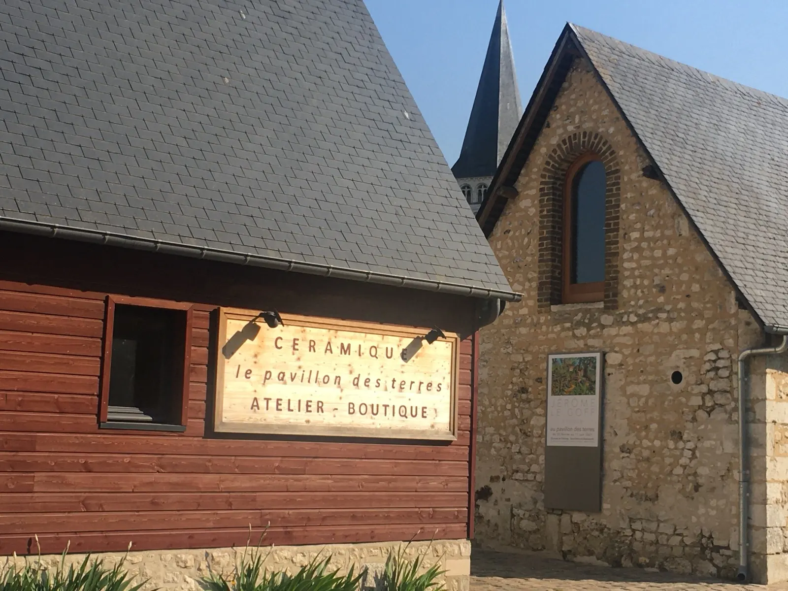

Céramiste Artisan d'Art, Saint-Martin-de-Boscherville
Pièces uniques inspirées de la nature

Je façonne et j'assemble porcelaine et grès au Pavillon des Terres, mon atelier-boutique au cœur du village, contigu aux jardins remarquables de l'abbaye Saint-Georges. Mes pièces s'inspirent de la nature, mais aussi des collections muséales.
- Lauréate NormandieAteliers d'Art de France 2025, sculpture « Coque Marine »
- 3,05 m de hautUn totem de 5 cm de diamètre, Biennale Révélation
- Musées de FranceDes œuvres acquises, Château de Martainville
- Mercredi au dimancheAtelier ouvert, 10 h – 12 h et 14 h – 18 h 30


Ma démarche
J'expérimente chaque jour de nouvelles techniques, notamment l'assemblage des grès et des porcelaines. Je suis attachée aux formes organiques ; toutes mes sculptures sont des pièces uniques. La nature et les paysages qui m'accompagnent nourrissent mes rêveries dans des voyages imaginaires.
La porcelaine
Pour sa blancheur, sa douceur, sa pureté et sa capacité à être travaillée tout en finesse.
Le grès
Pour son côté brut, ses teintes chaudes et naturelles.
Concours et pièces de musée
Des distinctions, des œuvres entrées dans les collections publiques et des commandes d'exception.
Coque Marine
Lauréate Normandie du concours Ateliers d'Art de France 2025.
Ateliers d'Art de FranceLe totem
3,05 m de hauteur pour 5 cm de diamètre, présenté à la Biennale internationale des métiers d'art et création.
RévélationMusées de France
Des œuvres acquises par les Musées de France pour le Musée des Traditions et des Arts Normands, « Le beau Geste ».
Château de MartainvilleL'éventail
Un éventail ajouré en porcelaine, commandé par la présidente des amis du musée de l'éventail.
Commande

À l'atelier en ce moment
Le Pavillon des Terres est mon atelier, ouvert au public : on peut m'y voir travailler. C'est aussi une boutique et un espace culturel qui accueille deux expositions par an, où graveurs, peintres et plasticiens investissent les murs.
Au printemps, un marché potier réunit des céramistes dans la cour.
Porcelaine, grès, et le jardin




Mes pièces sont aussi présentées dans ces boutiques :
- Musée des Impressionnismes, boutique du musée, Giverny
- GVRNY, la Maison des Métiers d'Art, Douains
- Boutique des Métiers d'Art, Aître Saint-Maclou, Rouen
- Musée de la céramique, boutique du musée, Ger
Me rendre visite
Horaires de l'atelier
- Mercredi au dimanche
- 10 h – 12 h et 14 h – 18 h 30
- Lundi et mardi
- Sur appel téléphonique
Salons, expositions, livraisons : assurez-vous de ma présence d'un simple appel ou d'un SMS.
76840 Saint-Martin-de-Boscherville 06 40 46 55 30 lepavillondesterres@gmail.com
En bus, ligne 530 du réseau Astuce depuis Rouen ou Caudebec-en-Caux. L'atelier est dans le Parc naturel régional des Boucles de la Seine normande et porte la marque Valeurs Parc : vous y trouverez les guides du parc et les bonnes adresses de producteurs et d'artisans.